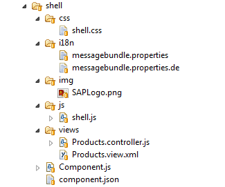

Components are independent and reusable parts used in OpenUI5 applications.
An application can use components from different locations from where the application is running. Thus, components can be developed by different development teams and be used in different projects. Components also support the encapsulation of closely related parts of an application into a particular component. This makes the structure of an application and its code easier to understand and to maintain.
OpenUI5 provides the following two types of components:
Faceless components (class: sap.ui.core.Component)
Faceless components do not have a user interface and are used, for example, for a service that delivers data from a back end system.
UI components (class: sap.ui.core.UIComponent)
UI components extend components and add rendering functionality to the component. They represent a screen area or element on the user interface, for example, a button or a shell, along with the respective settings and metadata. sap.ui.core.UIComponent extends sap.ui.core.Component and adds rendering functionality to the component.
The sap.ui.core.Component class is the base class for UI and faceless components and provides the metadata for both types of components. To extend the functionality, components can inherit from their base class or from another component.
The name parameter that gets passed into the component constructor represents the package name under which your component can be found. The module name' of the component is package name + .Component. You specify the module name in jQuery.sap.declare and in the extend methods of the Component.js.
A component is a folder. The folder name defines the component name and contains all optional and required resources that are used in the component except for the required OpenUI5 libraries and child components. Optional resources are, for example, the CSS and internationalization files, views, and images. The Component.js file is mandatory for components. It represents the component controller and provides the runtime metadata (properties, aggregation, events) and the component methods. The name parameter that is passed to the component constructor represents the package name under which you can find the component. The descriptor file (manifest.json) represents the component's manifest definition, see Descriptor for Applications, Components, and Libraries. The descriptor is optional, but we recommend to use it.
At runtime, the resources are exposed via a URL that can be mapped to a logical package name by using registerModulePath.
The following figure gives an example of a component folder structure.
The ComponentContainer control wraps a UI component. You use the control in the OpenUI5 control tree in the same way as any other control.
The following list explains how other concepts used in OpenUI5 are distinguished from the OpenUI5 components concept:
Composite controls
Both concepts provide a set of controls behind a single interface. Composite controls are intended for reuse within control development and allow to include existing controls in a complex control wheras components are intended for reuse in application development.
UI library
The UI library is the deployable unit around controls: Controls are never deployed standalone, but as part of a control library. Components, however, are self-contained and should not be used to deploy controls.
Notepad control
A notepad control is another way to define a control. Notepad controls have all the characteristics of a control.
MVC
The MVC concept allows to define views and controllers and, thus, to structure and reuse parts within an application. As MVC can only be deployed separately and has no means to define dependent styles or scripts that are loaded together with a view, this concept is of limited use across different applications.
Application
Applications have a single start URL and contain everything belonging to the application in a deployable unit. However, it is not possible to embed an application into another application as the knowledge about the required libraries, scripts and additional stylesheets is contained in the index.html.